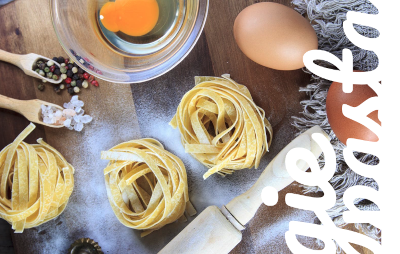

Nuestros Comienzos
En el año 1899 Sebastiano Bonaudi, quien vivía en María de Castellabate, un pueblo de Italia, viajó a Sudamérica buscando nuevas oportunidades. Una vez en Argentina, Bonaudi, que conocía como nadie el sabor de la buena pasta, tuvo la idea de fundar una fábrica de pastas que le permitiera revivir los momentos vividos en Italia. El saber italiano y el trigo argentino, asegurarían un éxito indiscutido. En el año 1942 su familia inauguró la planta de elaboración de pastas, BuonaPasta (Bonaudi falleció en el año 1948). Ante la importante demanda por parte de los consumidores argentinos, BuonaPasta creció hasta convertirse en sinónimo de pasta italiana en la argentina. BuonaPasta así se convirtió en la pasta argentina, paradigma y referente de nuestra cultura y herencia italiana. En 2015 se suma a la familia VeggiePasta®, la opción libre de glúten que conserva la calidad y la tradición de siempre y por supuesto su sabor iniguablable.